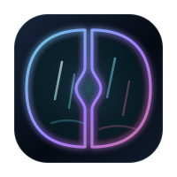
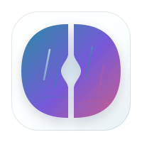

v1 · 夜雨霓湖
rainlake
雨湖版本：双 D 保持干净外轮廓，内部只保留少量雨痕、短反光和水面折线，让标识更湿润、更精致。


纯 HTML + CSS 原型，零依赖。以深蓝黑湖面、雨夜倒影和少量青紫 / 玫红反光塑造湿润冷色层次。
大面积保持低亮深色，霓光只服务于焦点、状态和图表，覆盖连接管理、终端、SFTP、监控等 8 个核心页面。
保留双 D 识别，左右两个 D 内加入雨痕短线和水面倒影，中间保持分开。
雨湖版本：双 D 保持干净外轮廓，内部只保留少量雨痕、短反光和水面折线，让标识更湿润、更精致。


点击卡片预览夜雨霓湖主题下的每个页面。
主机列表、分组管理、SSH config 导入、连接表单与详情视图。
Ready多标签 + 分屏 + 命令助手 // 浮层 + 状态栏指示。
Ready本地 / 远端双栏文件管理、传输队列、覆盖预检。
ReadyCPU、内存、网络吞吐、系统负载实时图表。
Ready命令片段管理 + 与命令助手联动的本地词库。
Ready多步骤工作流编辑器与执行记录。
Ready远程文件快速编辑器，多 tab + sudo 提权 + 高亮。
Ready外观、终端、命令助手等全部偏好配置。